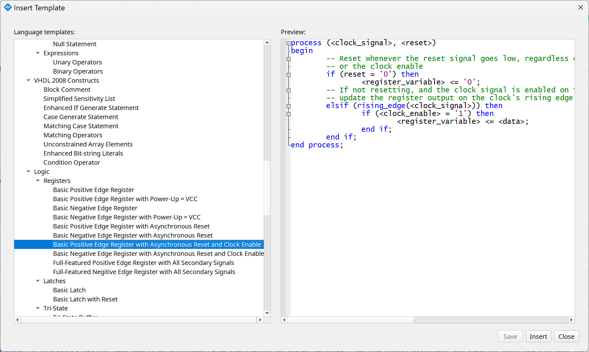
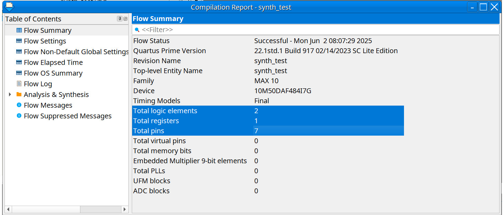
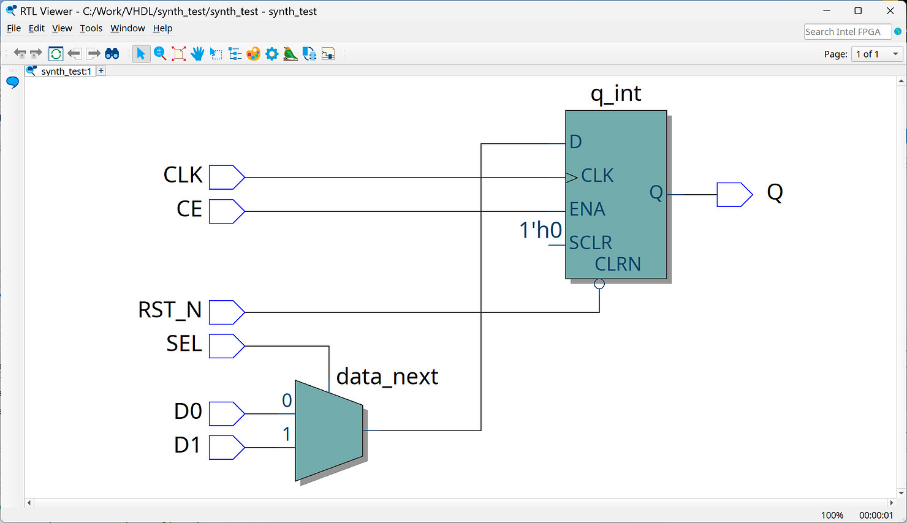
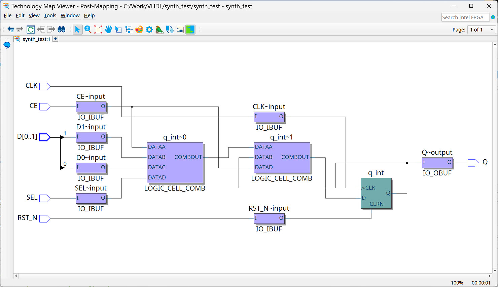
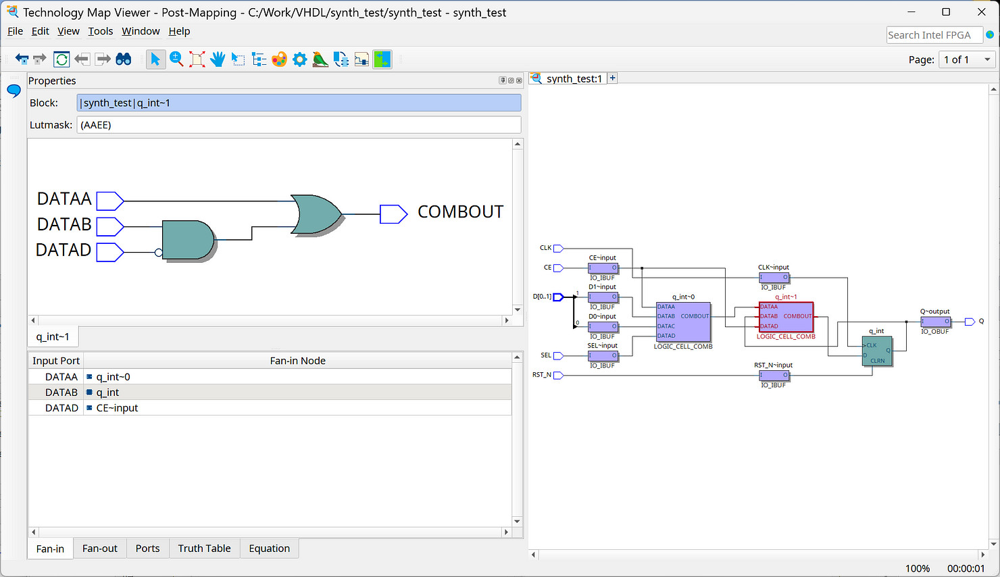
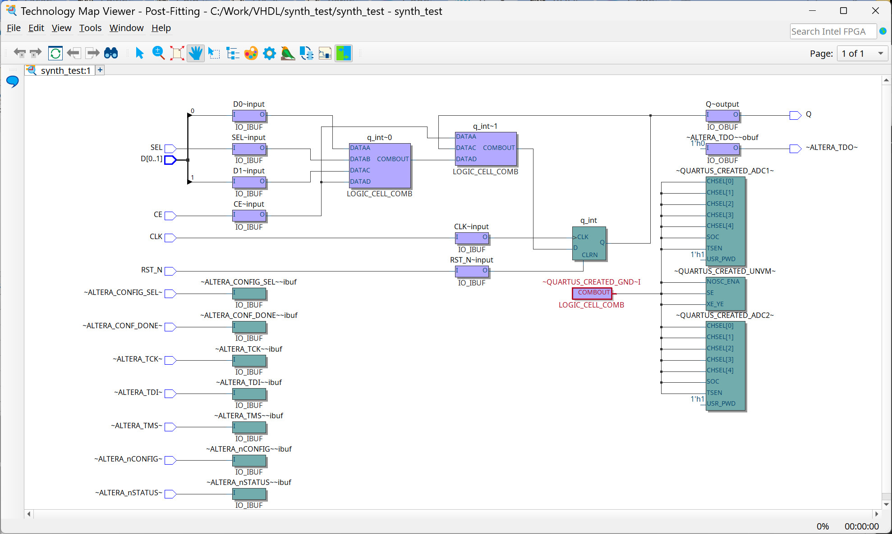

Tutorial: VHDL Coding & Logic Synthesis with Quartus Prime#
- HDL-based Logic Synthesis
- Quartus Prime - VHDL Templates
- VHDL Modeling: MUX2_1 + D-Type Flip-Flop
- Netlist Viewers
- VHDL Modeling: D-Type Latch
HDL-based Logic Synthesis#
In an HDL-based FPGA design flow, synthesizable VHDL source code of the logic design must be compiled and optimized using a logic synthesis tool to produce a lower-level netlist, similar to a gate-level netlist.
This netlist is then mapped to FPGA internal resources, which are subsequently fitted during the place and route steps to produce a post-fitting netlist. In the final step, a corresponding bitstream file is generated for configuration of the FPGA.

Figure: Intel / Altera FPGA Design Flow using Quartus Prime tools
Quartus Prime provides synthesis optimization options that target area, performance, power, or a balanced configuration, depending on design requirements. These options impact both synthesis run time and key design metrics such as area and performance.

Figure: Synthesis Options
Quartus Prime - VHDL Templates#
HDL coding styles have a significant effect on the quality of results for programmable logic designs. It is vitally important to understand the linkage between VHDL code and the corresponding logic produced by the synthesis tool.
Quartus Prime offers a collection of helpful HDL Code Templates (for VHDL, Verilog, and SystemVerilog), which can assist in accelerating development and ensuring best practices.


Figure: Quartus Prime - VHDL Code Template
VHDL Modeling: MUX2_1 + D-Type Flip-Flop#
In this section, we will explore how VHDL models of basic digital logic circuits are synthesized using the Quartus Prime software.
The following is the entity declaration of an example design (MUX2_1 + DFF):
LIBRARY IEEE;
USE IEEE.STD_LOGIC_1164.ALL;
USE IEEE.NUMERIC_STD.ALL;
ENTITY synth_test IS
PORT (
CLK : IN STD_LOGIC; -- clock input
RST_N : IN STD_LOGIC; -- asynchronous reset, active-low
CE : IN STD_LOGIC; -- clock enable
D0 : IN STD_LOGIC; -- data input 0
D1 : IN STD_LOGIC; -- data input 1
SEL : IN STD_LOGIC; -- data select
Q : OUT STD_LOGIC -- data output
);
END ENTITY;
Two versions of architectural implementations of the design example are provided below. Both versions lead to the same synthesis results.
Version 1
ARCHITECTURE rtl OF synth_test IS
SIGNAL q_int : STD_LOGIC;
BEGIN
mux_dff_proc: PROCESS (CLK, RST_N)
BEGIN
IF RST_N = '0' THEN -- asynchronous reset
q_int <= '0';
ELSIF rising_edge(CLK) THEN
IF CE = '1' THEN
IF SEL = '0' THEN
q_int <= D0;
ELSE
q_int <= D1;
END IF;
END IF;
END IF;
END PROCESS;
Q <= Q_int;
END ARCHITECTURE;
Version 2
ARCHITECTURE rtl OF synth_test IS
SIGNAL data_next : STD_LOGIC;
SIGNAL q_int : STD_LOGIC;
BEGIN
-- MUX2_1: conditional concurrent assignment
data_next <= D1 WHEN SEL = '1' ELSE D0;
-- D-type flip-flop with async. reset and sync. clock enable
dff_proc : PROCESS (CLK, RST_N)
BEGIN
IF RST_N = '0' THEN -- asynchronous reset
q_int <= '0';
ELSIF rising_edge(CLK) THEN
IF CE = '1' THEN -- clock enable is active.
q_int <= data_next; -- update data
END IF;
END IF;
END PROCESS;
Q <= q_int;
END ARCHITECTURE;
The key difference between the two versions is that the first one is modeled using a single process block, whereas the second one uses a conditional concurrent signal assignment for a 2-to-1 multiplexer, and a process block for a D-type flip-flop, where the data input comes from the output of the multiplexer.
Note: Inferring in the context of digital design and synthesis means that the synthesis tool automatically recognizes and generates hardware components — such as multiplexers, flip-flops, adders, or ROM / RAM blocks — from the HDL code, without explicitly describing those components.
The synthesis tool can automatically infer a multiplexer and a D-type flip-flop from the VHDL code. The synthesis report shows that the design utilizes two logic elements (LEs) and one register (flip-flop).

Figure: Synthesis Report
Note: A Logic Element (LE) is the smallest unit of logic in the MAX 10 device family architecture. Each LE includes the following features:
- Logic resources:
- A 4-input Look-Up Table (LUT) for combinational logic
- A programmable register (flip-flop) for sequential logic
- A carry chain connection (for fast arithmetic operations)
- A register chain connection (for shift register functionality)
- Interconnects:
- Local interconnects (for nearby LEs within the same Logic Array Block)
- Global interconnects (for communication across the FPGA fabric)
Netlist Viewers#
The result of the design compilation can be visualized using the RTL Viewer, the Post-Mapping Viewer and the Post-Fitting Viewer.
- The RTL Viewer provides a high-level, graphical view of the synthesized VHDL/Verilog code, showing abstract logic (multiplexers, flip-flops) directly from the VHDL/Verilog code.
- The Post-Mapping Viewer presents a detailed, technology-specific look at the design after mapping to actual device-specific FPGA resources (e.g. LUTs, LABs, IOBs).
- The Post-Fitting Viewer shows the final physical implementation of the design after placement and routing. It displays how the logic elements, interconnects, and I/O blocks are physically placed within the FPGA fabric.
The RTL Viewer shows that the design, after synthesis,
consists of two components at the register transfer level (RTL):
a 2-to-1 multiplexer (MUX2_1) and a D-type flip-flop (DFF)
(with some control inputs).

Figure: RTL Viewer
The Post-Mapping Viewer shows how the multiplexer and flip-flop
are technology-mapped onto the resources of the MAX 10 device.
The schematic displays the circuit components, including I/O buffer blocks for input and
output signals, two combinational logic cells (LOGIC_CELL_COMB),
and a flip-flop.

A combinational logic cell is typically a look-up table (LUT) with up to 4 inputs and one output. These logic cells can be used to implement logic gate networks or grouped logic functions. In this example, the LUTs are used to implement data selection logic, such as multiplexers.


Figure: Post-Mapping / Technology-Map Viewer
The Post-Fitting Viewer shows that additional logic resources and pins (e.g., JTAG pins, configuration status pins) are included alongside the user-defined logic.

Figure: Post-Fitting Viewer
The final placement or locations of physical resources can be inspected in the Chip Planner. The figure below shows the Chip Planner view in Quartus Prime, displaying a simplified view of the internal structure of the MAX 10 DA50 device:
- The large region located at the top-left corner corresponds to the on-chip Flash memory (CFM/UFM), responsible for storing the FPGA configuration bitstream.
- Along the boundary of the chip are the I/O blocks (IOBs).
- The central grid consists of Logic Array Blocks (LABs), each containing logic elements such as 4-input LUTs, flip-flops, and associated control logic. These LABs are arranged in vertical columns across the chip.
- Embedded memory blocks and DSP blocks (not used in this design) are also organized in vertical columns within the FPGA fabric.

Figure: A simplified view of the MAX 10 FPGA floorplan

Figure: Chip Planner view of the MAX 10 50DA device
VHDL Modeling: D-Type Latch#
The following is the entity of a design in VHDL that can be inferred as a D-type latch (with enable and asynchronous active-low clear).
LIBRARY IEEE;
USE IEEE.STD_LOGIC_1164.ALL;
USE IEEE.NUMERIC_STD.ALL;
ENTITY synth_test IS
PORT (
CLR_N : IN STD_LOGIC; -- asynchronous clear (active-low)
EN : IN STD_LOGIC; -- latch enable
D : IN STD_LOGIC; -- data input
Q : OUT STD_LOGIC -- data output
);
END ENTITY;
There are two equivalent VHDL implementations of the D-type latch.
Version 1
ARCHITECTURE rtl OF synth_test IS
SIGNAL q_int : STD_LOGIC := '0'; -- with initial value
BEGIN
latch_proc : PROCESS (CLR_N, EN, D)
BEGIN
IF CLR_N = '0' THEN
q_int <= '0';
ELSIF EN = '1' THEN
q_int <= D;
END IF;
END PROCESS;
Q <= Q_int;
END ARCHITECTURE;
Version 2
ARCHITECTURE rtl OF synth_test IS
SIGNAL q_int : STD_LOGIC := '0'; -- with initial value
BEGIN
q_int <= '0' when CLR_N = '0'
ELSE D WHEN EN = '1' ELSE q_int;
Q <= Q_int;
END ARCHITECTURE;

Figure: Post-Mapping Viewer of a D-type latch with enable and asynchronous active-low clear
Basically, a D-type latch can be implemented using a 2-to-1 multiplexer (MUX2_1) with a feedback path from its output to one of its data inputs.
In the Post-Mapping Viewer, it can be seen that
the logic cell (LOGIC_CELL_COMB), which is a 4-input LUT (LUT4),
implements a MUX2_1 and an AND2 gate.
The LUT4 has 4 inputs with connected as follows:
DATAA=DDATAB=q_intDATAC=ENDATAD=CLR_N
The output (O) is defined by the following Boolean equation:
O = ((!EN * q_int) + (EN * D)) * CLR_N,
where * and + represent logical AND and OR operators, respectively.
The Truth table of the output function is shown below.
D C B A | O
-----------
0 0 0 0 | 0
0 0 0 1 | 0
0 0 1 0 | 0
0 0 1 1 | 0
0 1 0 0 | 0
0 1 0 1 | 0
0 1 1 0 | 0
0 1 1 1 | 0
1 0 0 0 | 0
1 0 0 1 | 0
1 0 1 0 | 1
1 0 1 1 | 1
1 1 0 0 | 0
1 1 0 1 | 1
1 1 1 0 | 0
1 1 1 1 | 1
The output bits are be expressed as a binary or hex string:
1010_1100_0000_0000 or AC00 (referred to as the LUTMASK).
The following Python code can be used to compute the LUT4 table for the given Boolean expression.
print("D C B A | O")
print("-----------")
for i in range(16):
#print(f'{i:b}'.zfill(4))
D = (i >> 0) & 1 # A
q_int = (i >> 1) & 1 # B
EN = (i >> 2) & 1 # C
CLR_N = (i >> 3) & 1 # D
O = ((not EN and q_int) or (EN and D)) and CLR_N
print(f"{CLR_N} {EN} {q_int} {D} | {int(O)}")
This work is licensed under a Creative Commons Attribution-ShareAlike 4.0 International License.
Created: 2025-06-01 | Last Updated: 2025-06-02